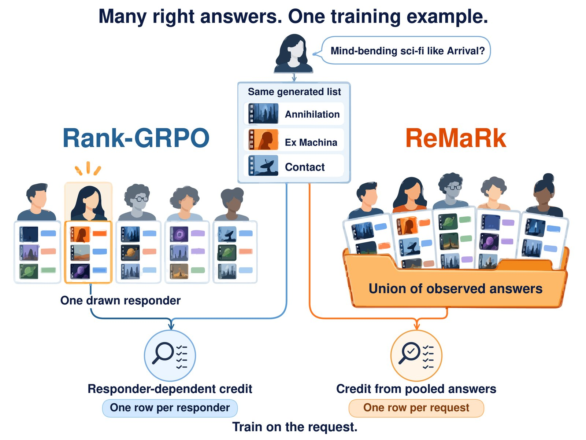
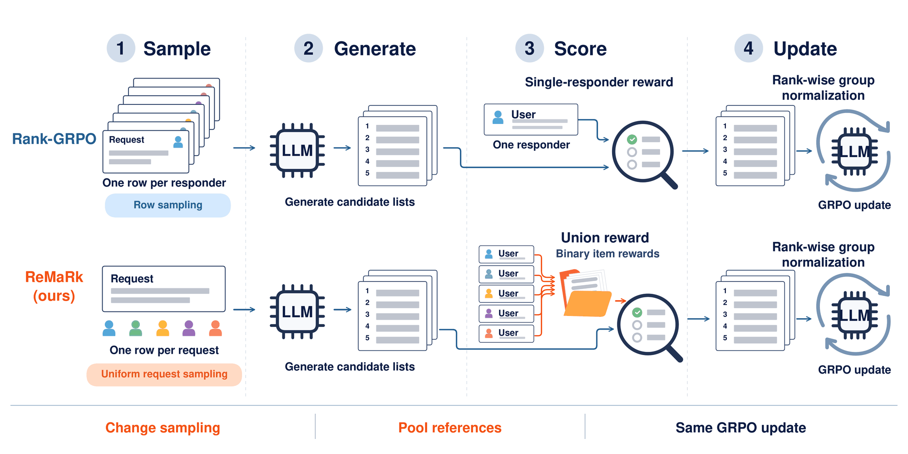
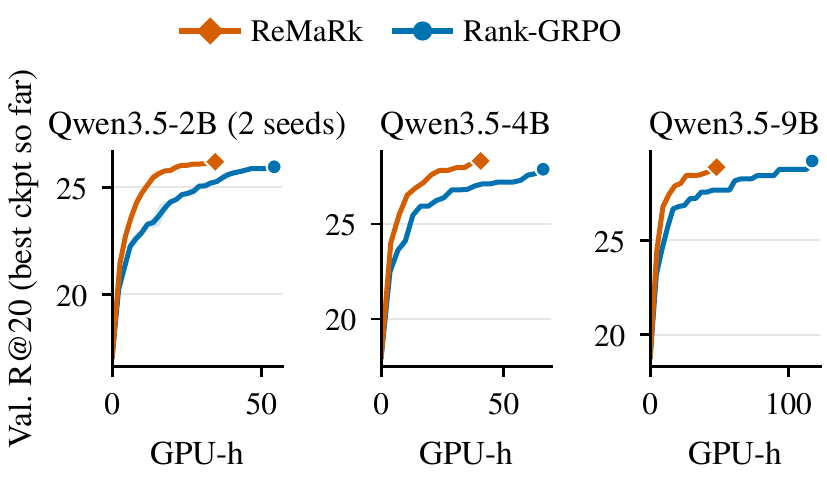
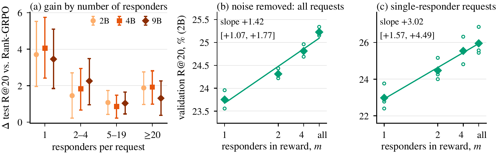
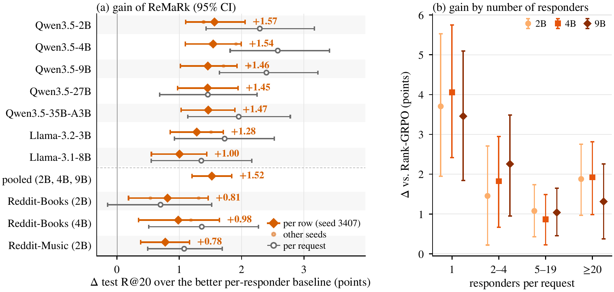

Responder noise
85%
of the variance of Rank-GRPO's advantages comes from which reply was drawn.
Affiliations pending

Key findings
LLM recommenders learn from Reddit threads where several people answer one request with different titles. Treating every reply as its own example injects responder noise into the RL signal; pooling the replies removes it.
of the variance of Rank-GRPO's advantages comes from which reply was drawn.
of the list comparisons in per-reply training carry no signal.
of the steps to reach the validation recall of 2,000 per-reply RL steps, on seven backbones and three datasets.
of the GPU-hours to reach Rank-GRPO's best in four of seven pairs trained until neither improves; never significantly behind on test.
Abstract
When a training prompt has several valid human answers, reinforcement learning (RL) should train on the prompt, not on each answer. LLM recommenders learn from Reddit threads in which several people reply to a request with different titles. The state-of-the-art recipe, Rank-GRPO, makes every reply a separate example and rewards a generated list only for that reply's titles, so which reply was drawn accounts for 85% of the variance of its advantages and 55% of the list comparisons carry no signal.
Averaging the reward over replies removes this variance in theory. Our method, ReMaRk, scores each list once against the union of all replies' titles, a 0/1 reward whose per-group scaling provably stays within a factor 1.51 of a constant, and samples every request equally; at 2B an averaged reward does as well, so pooling the replies is what matters.
Its main gain is RL compute: on seven backbones and three datasets it reaches the validation recall of 2,000 per-reply RL steps in 25 to 53% of the steps and leads at that budget. In seven pairs trained until neither improves, it is never significantly behind on test and, in four, reaches Rank-GRPO's best with 18 to 63% of the GPU-hours. The same union reward helps on ProtoQA, where about 100 people answer each question.
Method
ReMaRk changes only the training unit. It keeps Rank-GRPO's rank-wise group normalization and GRPO update.

Results
Best validation R@20 so far against training GPU-hours, for Reddit-v2 pairs trained until neither improves.

The test gain grows with the number of responders, and validation recall rises with the share of responder noise removed.


Beyond recommendation. The same union reward helps on ProtoQA, where about 100 people answer each question: +3.67 R@10 over the per-respondent reward (3 seeds).
Citation
@misc{remark2026,
title = {Many Right Answers, One Training Example: Removing Responder Noise from {GRPO} for {LLM} Recommenders},
author = {AUTHORS PENDING},
year = {2026},
note = {Preprint}
}
Resources
Training and evaluation code for ReMaRk and the Rank-GRPO baselines.
Reddit-Books and Reddit-Music as IDs and labels with build scripts; no Reddit text is redistributed.
Representative ReMaRk and baseline checkpoints.
Full paper with the appendix.